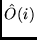
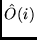

Given the two sets of configuration lists, wave functions and
eigenvectors, biotr evaluates the transition data between
the two CI expansions,
 ,
with  representing a magnetic or electric
transition probability operator of any order.
,
with  representing a magnetic or electric
transition probability operator of any order.
The calculation is non-relativistic when the eigenvectors were obtained using the mchf method. In this case the program expects to find the eigenvectors in a file with a .l suffix. If the user had applied the relativistic corrections using the Breit-Pauli method, the transitions determined by biotr will include the relativistic effects as well. In this case the program expects to read the eigenvectors from a file with .j suffix. In biotr, the initial and final states, which may not be orthogonal, are transformed in such a way that the orbitals are orthogonal between states so that orthogonal methods may be used to evaluate the transition matrix elements [#!mrg-bio!#].
Data is initialized in initr() and factr(), then the user selects the initial and final state, type of calculation (relativistic, or non-relativistic) and the type of transition E1, E2, M1, M2, .. or *'. The program then proceeds with the following steps:
The user is expected to provide information about which two sets of input files should be used and the type of calculation (E1, E2,..., M1, M2, ...). Note in the input below that E1 and O1 supplied by the user for Name of Initial State and Name of Final State, imply the existence of: E1.c E1.w E1.j and O1.c O1.w O1.j, if a relativistic calculation is being selected:
# ........A parity changing transition calculation........ >biotr Name of Initial State E1 Name of Final State O1 intermediate printing (y or n) ? n Relativistic calculation ? (y/n) y Type of transition ? (E1, E2, M1, M2, .. or *) E1 ------------------------------------------------------------------------
The angular data is not saved and therefore, for calculations along an iso-electronic sequence, the angular calculations are repeated for each atom.
Each .ls file contains a number of transition properties including: Atomic weight, principal quantum number, energies of initial and final states, transition energies, wavelength in vacuum, wavelength air, type of transition, line strengths, gf values, transition rates:
Format of an LS transition:
#####
Transition between files:
E
O
Z = 9 n = 7
3 -97.50578137 2s(2).2p(3)2P1_2P
3 -96.52277315 2s.2p(4)3P2_2P
215739.13 CM-1 463.52 ANGS(VAC) 463.52 ANGS(AIR)
E1 length: S = 7.81694D-01 GF = 5.12259D-01 AKI = 2.65057D+09
velocity: S = 8.22227D-01 GF = 5.38822D-01 AKI = 2.78801D+09
#####
An LSJ transition:
#####
1 -74.36649804 2s(2).2p(3)2P1_2P
1 -73.65565658 2s.2p(4)1S0_2S
156006.31 CM-1 641.00 ANGS(VAC) 641.00 ANGS(AIR)
E1 S = 4.69243D-01 GF = 2.22364D-01 AKI = 1.80493D+09
4.68123D-01 2.21833D-01 1.80062D+09
.....
The convergence of the length and velocity forms are important factor for estimating the accuracy of the model. The Breit-Pauli methods have not modified the transition operator for the lowest order relativistic corrections in the velocity form. These are not important for the allowed transitions, but are important in spin-forbidden transitions. Generally, the accuracy of a transition depends on the accuracy of the length and velocity form in the non-relativistic approximation, and the accuracy of the Breit-Pauli transition energy, with the normalized length form value preferred. For intercombination transition, accuracy also depends on other factors, such as the accuracy of the separation of the two terms important for the transition.